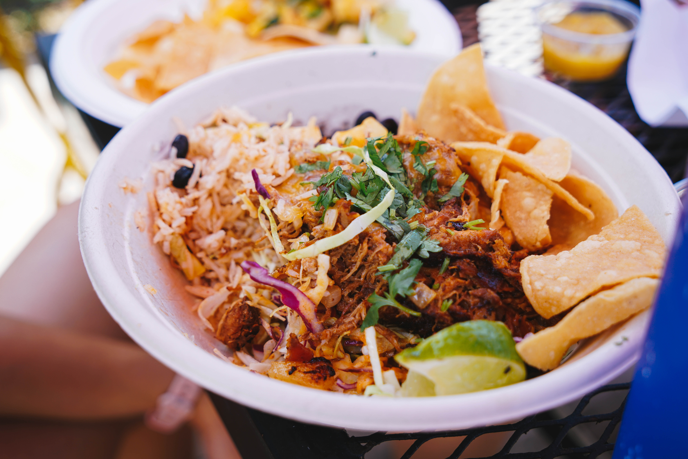

Singapore Noodles with Crispy Tofu

Description
One of the first recipes I tried from this site! I never need an excuse to eat more noodles or more tofu...but I will HAPPILY make up a reason just to eat this for WEEKS!
Tip: Make sure to freeze and thaw your tofu before preparing for the best texture!
Ingredients
Crispy Tofu:
- 14 oz firm or extra firm tofu
- Pinch of salt
- 2 Tbsp cornstarch
- 1.5 Tbsp cooking oil
Stir Fry Sauce:
- 1/4 cup soy sauce
- 1 Tbsp toasted sesame oil
- 1 Tbsp Sriracha
- 1 Tbsp rice vinegar
- 2 Tbsp mild curry powder*
Stir Fry:
- 8 oz rice vermicelli or rice sticks
- 1.5 Tbsp cooking oil
- 2 cloves garlic
- 1 Tbsp grated fresh ginger
- 4 green onions, divided
- 9 oz bag shredded cabbage and carrots
Steps:
- Remove the tofu from the package and wrap it in a clean, lint-free towel, or paper towels. Place the wrapped tofu between two cutting boards or plates, and place something heavy on top (books, a pot of water, etc.). Press the tofu for about 30 minutes to extract the excess moisture.
- While the tofu is pressing, prepare the stir fry sauce. In a small bowl, stir together the soy sauce, sesame oil, sriracha, rice vinegar, and curry powder. Set the sauce aside.
- Place the rice noodles in a casserole dish or large bowl and pour boiling water over top. Let the noodles soak for about 5 minutes, or until soft. Drain the noodles in a colander and set them aside until needed.
- Once the tofu has pressed, cut it into small cubes (3/4 to 1-inch). Place the cubes in a bowl and season with a pinch of salt. Sprinkle the cornstarch over top and gently toss until the cubes are coated.
- Heat a large skillet over medium heat. Once hot, add one to 1.5 Tbsp cooking oil and tilt the skillet to distribute it over the surface. Add the cornstarch coated tofu cubes and cook until golden brown and crispy on all sides. Remove the tofu from the skillet.
- While the tofu is cooking, mince the garlic and grate the ginger. Slice the green onions, separating the white ends from the green ends.
- After removing the tofu from the skillet, add a bit more cooking oil along with the ginger, garlic, and the white ends of the sliced green onions. Sauté for about one minute, or just until they begin to soften.
- Add the bag of shredded cabbage and carrots and continue to sauté for about one minute more. Only sauté the cabbage until it looks like it’s just beginning to wilt.
- Add the drained rice noodles, prepared sauce, and fried tofu cubes back to the skillet. Carefully stir and toss the contents of the skillet until everything is combined and coated with sauce. Turn off the heat and sprinkle the green ends of the green onions over top.